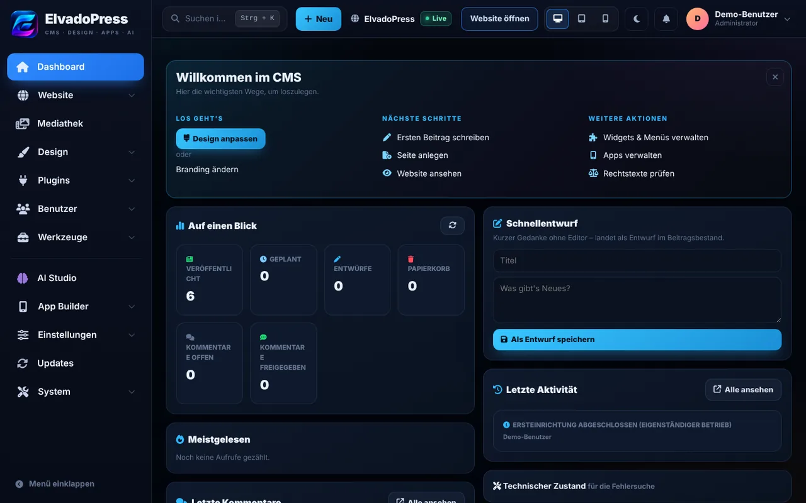
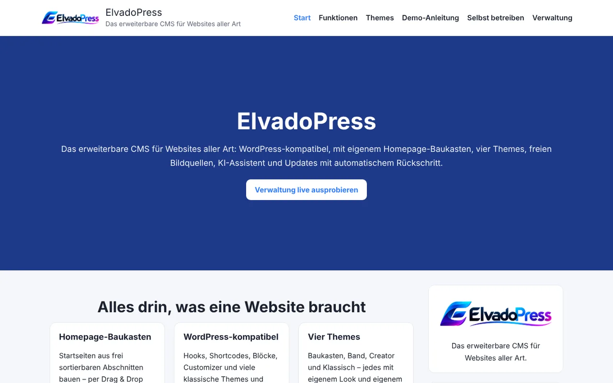

Inhalte
Beiträge, Seiten, Kategorien, Schlagwörter, Kommentare mit Moderation und eine Medienbibliothek mit Bildgrößen.
ElvadoPress läuft auf normalem PHP-Webhosting – ohne Build-Schritt. Themes, Plugins, visuelle Verwaltung, eine WordPress-kompatible Schicht und optional KI, eigene Apps und Alexa. Was nicht zum Kern gehört, ist ein Plugin und bleibt aus, bis du es einschaltest.

Der Kern deckt die täglichen Aufgaben ab. Alles Weitere kommt als Plugin hinzu, ohne den Kern zu verdoppeln.
Beiträge, Seiten, Kategorien, Schlagwörter, Kommentare mit Moderation und eine Medienbibliothek mit Bildgrößen.
Themes, Customizer mit Live-Vorschau, Menüs, Widgets und ein Homepage-Baukasten. Neue Themes lassen sich vorab in einer Sandbox ausprobieren.
WordPress-Themes (klassisch und Block-Themes) und -Plugins aus dem offiziellen Verzeichnis lassen sich installieren und ausführen.
Rollen, lokale Anmeldung mit Login-Schutz, Aktivitätsprotokoll. Es gibt keine Anbindung an externe Anmeldedienste.
Formulare, Umfragen sowie optional Mitglieder, Forum und soziales Netzwerk.
SEO, Weiterleitungen, Wartungsmodus, Backups, Website-Zustand und Updates mit automatischem Rückschritt bei Fehlern.
Im Installer wählst du Empfohlen, Minimal (nur Kern) oder Benutzerdefiniert. Offizielle Plugins werden über Prüfsummen als unverändert erkannt.
Meta-Angaben, OpenGraph, Schema.org, echte Sitemap, Editor-Vorschau.
Login-Begrenzung und -Protokoll, Sicherheits-Header, Dateiänderungs-Prüfung.
Zeitplan, Rotation, Prüfsummen, Sicherheitskopie vor jeder Wiederherstellung.
Seiten-Cache, Lazy Loading, moderne Bildformate (WebP, AVIF).
Formular-Builder mit SMTP, Spam-Schutz ohne Fremddienste, Webhook, Einsendungen.
Interne, cookiefreie Statistik. Matomo oder Google Analytics nur nach bewusster Einrichtung.
Automatische Weiterleitung bei geänderter Adresse, Schleifen-Schutz, 404-Monitor.
Textwerkzeuge im Editor, nutzt die zentrale KI-Einstellung. Kein eigener Schlüssel im Plugin.
Webradio- und Audio-Streams als Player, dazu Sendeplan und „Jetzt läuft“ aus deiner eigenen Liste. Nicht Standard.
Alles ist optional und startet leer. Es werden keine fertigen Apps ausgeliefert und nichts automatisch veröffentlicht.
Aus deiner Website entstehen Android- und Windows-Apps (Website-App oder Baukasten-App mit Tab-Leiste). Gebaut wird in deinem eigenen GitHub-Repository – über den Assistenten im CMS, per Hand in GitHub Actions oder lokal. Hinweise, Wartungsmodus und Tab-Leiste pflegst du ohne neuen Build im CMS.
Sprachmodell, Skill-Angaben und Backend entstehen aus deinen Themen und Beiträgen: Der Skill liest Neuigkeiten vor und beantwortet Fragen zu den Themen, die du pflegst.
Ein Chat-Fenster für deine Website, ab Werk ausgeschaltet. Anbieter, Schlüssel und Modelle stellst du zentral ein; Schlüssel bleiben auf dem Server.
Voraussetzung: PHP 8.1 oder neuer mit mbstring. Empfohlen: zip, curl, gd. Für den optionalen Datenbankspiegel pdo_sqlite, pdo_mysql oder pdo_pgsql.
cms/data/ muss beschreibbar sein.https://deine-domain/cms/ aufrufen: Der Assistent fragt Website-Name, Sprache, Zeitzone, Administratorkonto, optional die Datenbank und die Installationsart.Wartung eines bestehenden Systems? Die Änderungsliste nennt Update-Hinweise (z. B. neu anmelden, einmal neu veröffentlichen).
Das neutrale Standard-Theme direkt nach der Einrichtung. Dazu gibt es die Themes Baukasten, Band und Creator.

Eine stabile REST-API, ein natives Plugin-System mit Hooks und ausführliche Dokumentation. Alle Tests laufen bei jedem Push in der CI.